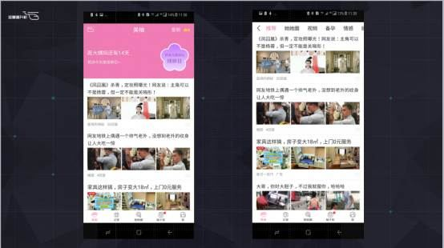
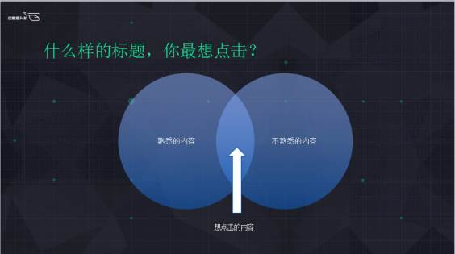
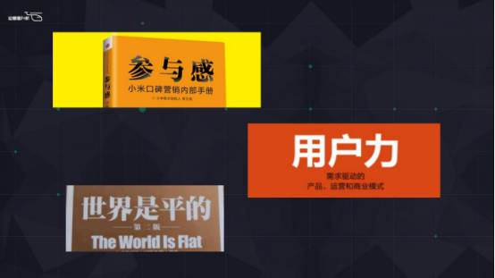
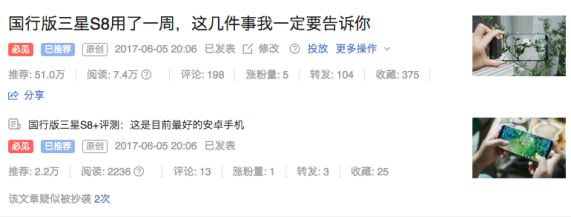

只有起好标题，你的内容可能才会有意义，你的内容才会有被用户点击的可能。
在讲套路之前，首先我们来看看两组数据
第一组数据：截至 2017 年 4 月，“头条号”平台的账号数量已超过 60 万个；
第二组数据： 2016 年中国微信公众号数量超过 1200 万个，今年的这个数字还会增长到 1415 万个，也就是说数字会越来越多。
现在做内容运营的人已经很多，以后做内容的人会更多，会多到什么程度呢？举个例子，我之前用一个APP来记录我生理方面的一些状况，这个APP其实就是一款工具，之前的界面很简单，功能也非常清晰，可以很清楚看到目前自己的状态、阶段。

更新过一次之后，我发现，整个界面变得跟今日头条有点像了，点开之后，全部都是那种今日头条风格很浓厚的文章，跟女性生理期没有多大关系，但是会一直吸引你看，要不是这个提示还在的话，我都可能以为我已经点到今日头条了。现在UC也是这样做，把界面变成今日头条的样子。
难道这个APP它不知道把这个做成这样会让人觉得很烦，因为我只是想要一个工具而已。
现在的电商也都是同样的套路，淘宝有淘宝头条，首页大概中间的位置，你点进去会发现会变成今日头条的样子，京东也有类似的功能。
为什么会这样呢？我之前看到一个说法，“因为互联网高度碎片化，受众注意力分散，很多人发现原本直接卖东西的办法已经混不下去了，于是他们就想着用一些办法先把人群攒起来，最后再找点什么卖给这群人。”那什么办法可以把人群攒起来？做内容。
当然，做社区什么的也是可以的，但是做内容而言我个人是觉得容易得多。不管你是电商，还是一个工具，有内容就能把用户黏住，在你身上花更多的时间；如果不这样做的话，用户利用完你就走了，买完东西就走了，他怎么会在你那里买更多的东西呢，所以内容运营是非常重要的。
那么，做内容运营什么最重要呢？首先内容本身很重要，其次要注意好包装。在互联网上，内容的包装其实就是标题了。现在有一个词挺流行的，CTO，CTO是什么？首席技术官吗？其实是首席标题官。只有起好标题，你的内容可能才会有意义，你的内容才会有被用户点击的可能。
其实还是之前那个问题，现在时间碎片化，我们根本没有时间去发现你的好，只有标题，先把人吸引过来再说。
不知道怎么起标题，不如试试这几个套路
一、要给人一种比较陌生的感觉

首先要明白一个问题，什么样的内容和什么样的标题是你最想点击的，想想你以往点过的标题，它们有没有一个共同的规律？会猎奇。但是不管你怎么猎奇，你还是在自己的兴趣范围之内。
用我自己的例子讲，我是做科技资讯的，所以我会对科技很感兴趣，所以如果是一个体育咨询标题起得再怎么猎奇我都不会去点，因为我这个事情是我完全不在意的。我要看咨询肯定是跟科技相关的，基本上不会去看体育内容，也就是说你起的标题一定要带有目标，有用户感兴趣的关键词。
我知道我的内容是做给对科技感兴趣的人看的，所以我会想方设法往这方面去靠。比如苹果、小米、三星、魅族这些放上标题其实就很吸引人了。但是如果一个标题，用户一看就知道你要说什么，客户就不会去点，如果我一看就知道这个标题里的内容，我还要去点，我不是在浪费时间吗？所以起标题的基本规则其实就是：既要有客户熟悉的，又要突出用户未知的，给人一种比较陌生的感觉，在这两者之间，就是应该是比较想点击的标题了。

比如说这三本书的标题，《参与感》，大家知道参与这个词是很熟悉的，但是加了一个“感”字，“参与感”就有点陌生了，让人好奇。《世界是平的》，其实大家都知道世界是不平的，是个球形，这个标题也让人好奇。《用户力》也是同样的道理。这三本书都是畅销书，你们可以从他的书名里感觉出来，给你一种既熟悉又陌生的感觉。
《Iphone7 为何取消64GB，原来苹果有这样的心计》
这是去年iphone7 刚出的时候我的一篇文章，在搜狐平台大概有超过 1000 万的阅读量，我来简单分析一下，为什么这个标题能够算是一个好标题。
大家都知道Iphone7，它是当时苹果的下一代手机，对这个感兴趣的人会比较关注，但是Iphone7 取消64G这一点可能有人不知道，或者说不知道为什么会取消64G，这个标题就会让人觉得比较好奇了。
《竟能记录私人生活，苹果iOS9 上手玩》
iOS9 是苹果手机的操作系统大家都知道，但是如何记录私生活，大家就不知道。
《Siri：从静静被调戏到帮你叫外卖上门》
大家都知道Siri是经常被调戏，比如说你问他有没有男朋友你让他唱个歌，读首诗什么的，B-BOX一下，但是怎么叫外卖呢？你不知道，所以这个也比较陌生。
总的来说，其实这三个标题都有内容规则在，即有用户熟悉的信息点，也有用户陌生的信息点。完全熟悉是没必要去点的，完全不熟悉是没有兴趣去点的。
《据说最近这条很火，然而并没有什么卵用啊！！！》
如果你是一个普通用户，你看到这个标题，它在茫茫的咨询当中，出现了这个标题，作为已经身经百战的人应该是不会去点这样的标题了。这个标题最大的问题，其实就是故弄玄虚，我们完全不知道它说什么，内容很空泛。
其实这篇文章的内容是去年的一个热点，就是反手摸肚脐，证明是好身材的内容。当时是一个大热点，我们很快就跟进了，那时候我们运营小哥第一次取的标题就是这个。如果是几年前大家看到这个标题，可能会看一下，但是现在身经百战看得多了，他们就会想：与其冒风险去看一条我完全不知道是什么的内容而且很有可能浪费我时间的标题，还不如选择一条重点比较突出，能够快速判断内容是否有用的标题。总之就是说，不要故弄玄虚，坚决把重点突出。
二、阿拉伯数字在标题中的应用
现在有三个标题，
A、《如何起一个好标题》
B、《如何起一个好标题，这里有四个要点可以参考》
C、《如何起一个好标题，这里有 4 个要点可以参考》
A标题相对比较空泛，但是后面两个标题，有数字加词就显得更加具体，更加真实，感觉是干货的可能性更大一点，更能为用户提供有用的信息。B和C比起来，因为B用的是中文，C用的是阿拉伯数字，节奏显得更加活泼，更加能够突出，吸引人。
如果可以的话，尽量在标题用上一些不同的东西，比如说阿拉伯数字，但是如果有时没办法，没有那么多的数字可以用的怎么办呢？那你可以多用一下可以用惊叹号、感叹号，总之就是形式上不一样。所以你在今日头条上也可以看到那种很多文章标题都有叹号、问号，甚至省略号。
那么，阿拉伯数字有了，问题有了，可是这个标题看起来还是太平了，在茫茫咨询中还是不会想点击它，到底是为什么呢？可能说了一点那种动感，感觉还是一个太平的东西，没有什么转折，所以我们看看下面的例子。
三、营造一种节奏感
《苹果发布IOS9.3.2，小更新而已》
这个标题一看就是有问题的，都说了小更新而已，就是常规更新，点进去不过是这个东西更新了，甚至我自己看我的手机我就能知道，苹果可能推送了，现在开始更新系统了。
《苹果发布IOS9.3.2，小更新却有大麻烦》
它不仅有一个小跟大的对比，还有一个非常强烈的转折词，“却”，是不是有更大的节奏感。
《Windows10 可免费升级，你愿意试试吗？》
“你愿意试试吗”其实还不错，有一定的互动，可是还是太平淡了，不如加一点感情，把微软更加拟人一点，
《微软苦恼，为啥Windows10 免费却没人升级》
是不是你就会想去看看到底是为什么？
《锤子今天发布T3 了吗，并没有》
其实这个大家都知道，但是如果你在后面加一个“但是快了”，感觉就会好一点。总之，在起标题的时候，就是要注意营造一种节奏感，不管是用对比也好，用强烈的转折词也好都比平铺直叙来得好得多。
四、少用名词形容词，动词才是王道
名词，始终比不上动词带来的那种冲击感还有画面感，即使这个名字加了很多动词，他人就是动词，而且很有可能加了形容词，读起来就让人觉得很累。
举个例子：
《让人脑洞大开的即将到来的 5 款智能手机》
太平淡，不仅平淡而且很拗口，读出来很累，面对这样的标题我们不妨改一改，甚至去掉一个“的”显得更加清爽一点，
《让你脑洞大开的五款智能手机即将到来》
少了一个“的”读起来没那么绕，而且重点就从智能手机变成即将到来，就更加有动态，更加有画面感，但是还是很转，读起来还是太累了，那怎么办呢？我们就拆一下，我们就拆分成，
《让你脑洞大开！这五款智能手机即将到来》
这三个标题一个比一个更动感，读起来更轻松。当然，也不是动词就绝对优于名词，偶尔来一点以名词为主的标题反而显得还比较特别，最重要的是你的内容确实是围绕大热点的话，你有时候用一些名词效果也还不错。
我以前有一个领导每一次苹果开发布会和时候，他都会都写一篇《XXXXX9 大亮点和 5 大遗憾》；如果苹果是秋季发布会，他就会写《苹果秋季发布会 9 大亮点与 5 大遗憾》，如果是春季发布会就会写《苹果春季发布会 5 大亮点与 7 大遗憾》或者也时候也会写《Iphone7 发布会 5 大亮点 7 大遗憾》之类的，这个标题就挺好，因为它不仅有强烈的对比，而且人们天然就想看你吐槽苹果，每一次他这个套路一出，就是流量收割机的效果。
总之，特定情况特定分析，如果没有特别好的处理方法，比如说 9 大亮点与 5 大遗憾，那你多用动词肯定还是没错的。
五、扔一点小bug
在起标题的时候，我们可以利用我们对知识、内容的了解，故意用一些读起来像是错误，但是实际上完全没有问题的说法，这样子就会有一部分的用户就会觉得这个小编又写错内容了，我要点进去把这个小编批判一番。
在三星Note上市之前，我们想写一篇预测，题目是：
《这可能是三星最贵的Galaxy手机了》
当时这篇文章在多个平台都有不错的阅读量的评论数。因为当时三星Note7 还没有发布，这篇文章写的是Note7 的国行版有可能超过 7000 元，因为它一超过 7000 元，它就是这个系列最贵的一款了，但是用户以为我们不知道三星还有一款W系列会更贵，会超过万元的，所以很多人点进这篇文章，开始教育我们，就是说，三星W2016 难道没有人听说过吗？小编你不知道W系列一万多吗？他们都会出来批判你的那种感觉就出来了。但是还有一部分用户为你打抱不平，比如说人家说的是Galaxy系列，没仔细看标题吗？这样一来一回，这篇文章的讨论数就上去了。所以，大家在实际操作中，你也可以想想你有什么特别了解，特别熟悉的东西，比如类似小bug，但其实不是bug的东西，用户看了会很刺激。
差不多就是上面一些套路，现在还有一些自媒体平台，是支持双标题的，我们就可以利用这样的工具，其实每一次同一个文章起两个标题，经常总结它，你就发现什么标题其实确实是经得起市场考验的。

我们最近就写了一篇三星S8 的评测文章，起了两个标题，第一个是《国行版三星S8 用了一周，这几件事我一定要告诉你》，这个标题就明显好于《国行版三星S8 评测，这是目前最好的安卓手机》，为什么？因为后面这个太普通了，而且什么都说得太明白了，用户一看就知道你这篇文章就是要吹三星S8 嘛，但是第一个标题，他就会想，你到底是想说它的好处还是坏处？你肯定是有几点特别重要的事情想跟我分享，而且前面还用了三星用了一周，就显得很实际。第一个比第二个标题好得多，没那么空，总之大家起标题的时候，不妨多试试。因为以前起了标题定了之后发出去，就是没有对比，现在可以通过一些小工具作为对比。
标题就是要在字数限制内尽可能展示多的信息，以及更多的情绪。标题越丰满吸引用户点击的可能性就越大。
用户要么是被内容本身打动，要么就是对你的这个情绪好奇。
当然，这一切都是建立在你对内容很明白清楚的基础之上，要表达清晰，最重要的就是我们自己要思路清晰，我们必须清楚哪些内容是用户感兴趣的，哪些内容是客户已经知晓，但是哪些是用户可能感兴趣，然后把这些事情就清晰表达在标题上，这才是好标题的基础。接下来，我们再通过之前说的利用数字，标点符号，动词的小技巧不断完善。
还有最重要的，一个好的内容其实更容易包装出一个好的标题，仅仅想靠标题把无聊的内容包装成成熟的热点，难度相当大，就算你可能标题看起来很刺激，但是用户点进去之后，但是可能对接下来的推荐也是有影响的。在起好标题之前，一定要把整个内容先想好，内容想好了，很多时候那个好的标题就出来了。
以上内容易优小编的分享内容。